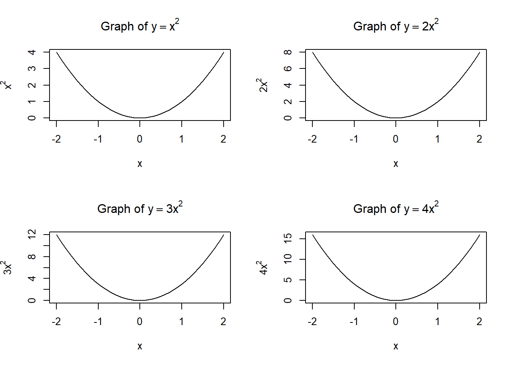
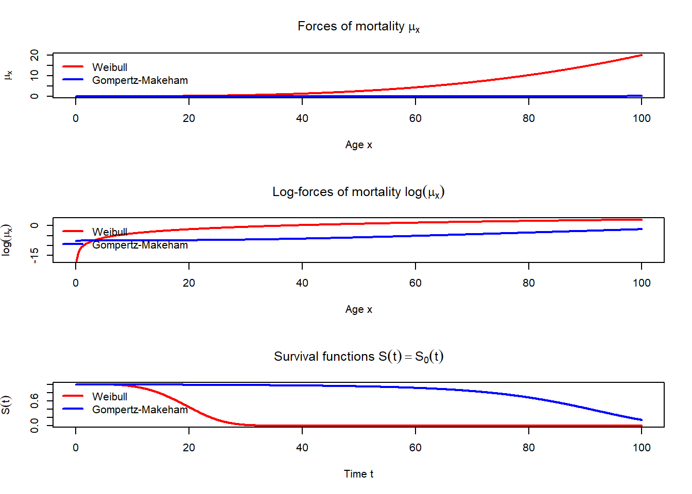
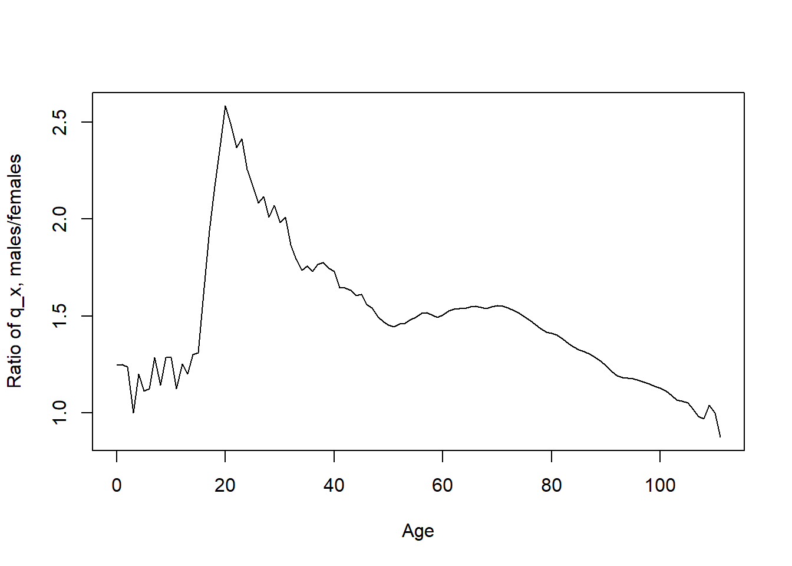
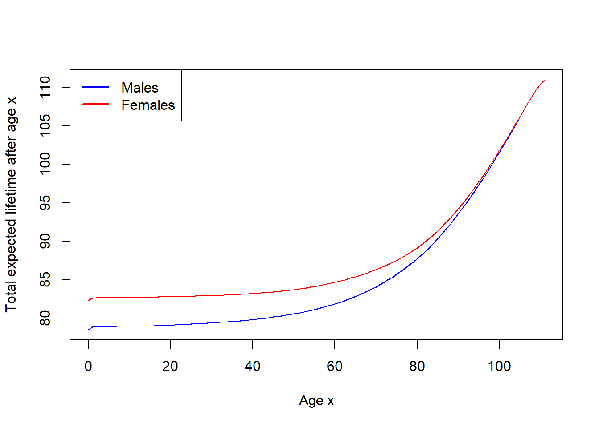

where \(\alpha,\beta>0\). Although we could use the Weibull distribution function, it may be easier to define the required functions directly (see Lab 3 for how to define a function in R).
Gompertz and Gompertz–Makeham models
Recall that the Gompertz–Makeham model is given by
where \(a,b,c>0\), and the Gompertz model corresponds to \(a=0\).
Subplots in R
Often we need to present several plots together, making a grid of plots. This can be done using the par function in R, for example,
x=seq(-2,2,0.1)par(mfrow =c(2, 2))plot(x, x**2, type="l", main =expression("Graph of "* y==x**2), xlab="x", ylab=expression(x**2))plot(x, 2*x**2, type="l", main =expression("Graph of "* y==2*x**2), xlab="x", ylab=expression(2*x**2))plot(x, 3*x**2, type="l", main =expression("Graph of "* y==3*x**2), xlab="x", ylab=expression(3*x**2))plot(x, 4*x**2, type="l", main =expression("Graph of "* y==4*x**2), xlab="x", ylab=expression(4*x**2))

The parameter mfrow means that the plots are presented row by row. They can be presented column by column with the mfcol parameter.
It is crucial to restore the single-plot setting by the command par(mfrow = c(1, 1)).
1.1
Let \(\alpha=5\cdot10^{-6}\), \(\beta=4\), \(a=0.0005\), \(b=0.00003\), \(c=1.09\).
Produce three plots in one column. Include the legends to each plot.
The first plot should include the graphs for the forces of mortality \(\mu_x\) for \(x\in[0,100]\) for two models: Weibull and Gompertz–Makeham.
The second plot should include the graphs for \(\ln \mu_x\) for \(x\in[0,100]\) for these two models.
The third plot should include the graphs for \(S(t)=S_0(t)\) for \(t\in[0,100]\) for these two models.
Note that, in legend function, the parameter bty = "n" removes the frame around the legend as on the plots below.
Code
alpha <-5e-6beta <-4a <-0.0005b <-0.00003c <-1.09mu_weibull <-function(x) { alpha * beta * x^(beta -1)}mu_makeham <-function(x) { a + b * c^x}S_weibull <-function(t) {exp(-alpha * t^beta)}S_makeham <-function(t) {exp(-a * t - b * (c^t -1) /log(c))}x <-seq(0, 100, 0.1)t <-seq(0, 100, 0.1)par(mfrow =c(3, 1))plot(x, mu_weibull(x), type ="l", col ='red', lwd =2,xlab ="Age x", ylab =expression(mu[x]),main =expression("Forces of mortality "* mu[x]))lines(x, mu_makeham(x), col ='blue', lwd =2, lty =1)legend("topleft",legend =c("Weibull", "Gompertz-Makeham"),lwd =2, lty =c(1, 1), col=c("red","blue"), bty ="n")plot(x, log(mu_weibull(x)), type ="l", col ='red', lwd =2,xlab ="Age x", ylab =expression(log(mu[x])),main =expression("Log-forces of mortality "*log(mu[x])))lines(x, log(mu_makeham(x)), col ='blue', lwd =2, lty =1)legend("topleft",legend =c("Weibull", "Gompertz-Makeham"),lwd =2, lty =c(1, 1), col=c("red","blue"), bty ="n")plot(t, S_weibull(t), type ="l", lwd =2,col ='red', xlab ="Time t", ylab =expression(S(t)),main =expression("Survival functions "*S(t) == S[0](t)),ylim =c(0, 1))lines(t, S_makeham(t), col ='blue', lwd =2, lty =1)legend("topleft",legend =c("Weibull", "Gompertz-Makeham"),lwd =2, lty =c(1, 1), col=c("red","blue"), bty ="n")

Code
par(mfrow =c(1, 1))
2 Life tables
Download the file elt17.csv which contains the values of \(l_x\) for males and females at different ages from the English Life Tables No.17 (2010 to 2012) dataset (you do not need to download the full dataset, just elt17.csv file). Upload it to your project.
2.1
Check the first and last rows of the dataset. For the last rows, use the tail function.
The c(...) function in R is very flexible. For example, if v is a vector and n is a number, then c(v,n) returns a longer vector:
v <-c(1,2)c(v,3)
[1] 1 2 3
The same would work if instead of n we would have another vector or even more general structure, or lack of data at all:
c(v,NA)
[1] 1 2 NA
Note that NA is a special R-object which represents the lack of provided data. As you can see in the dataset elt17.csv, some data is absent.
Note also that the command datasetName$columnName can be used even if the column with columnName does not yet exist. In this case, such a column would be created.
2.2
Calculate \(d_x=l_x-l_{x+1}\) for all possible \(x\) for both males and females. (Hint: use diff function from Lab 7.) Fill the absent values of the vectors \(d=(d_x)\) with NA. Assign the results to the dataset columns MaleDx and FemaleDx, respectively (this would create these columns).
Age Males Females MaleDx FemaleDx
111 110 4 14 2 7
112 111 2 7 1 4
113 112 1 3 NA 1
114 113 NA 2 NA 1
115 114 NA 1 NA NA
116 NA NA NA NA NA
2.3
Recall that \(d_x=l_xq_x\), where \(q_x\) is the probability of death within the next year. Plot the ratio \(q_x^{male}/q_x^{female}\) for integer ages \(x\in[0,111]\).
Code
qx_males <- dx_males/lx_malesqx_females <- dx_females/lx_femalesplot(age[1:112],(qx_males/qx_females)[1:112], type="l",xlab="Age", ylab="Ratio of q_x, males/females")

For the next task, you may need to use cumsum function discussed in Lab 1. Recall that, for vector \((x_1,\ldots,x_n)\) its cumulative sum would be the vector
\[
(x_1, x_1+x_2, x_1+x_2+x_3,\ldots, x_1+\ldots+x_n),
\] i.e. on each position one has the sum of the “head” of the vector up to that position. What if we want to have the sum of the “tail” of the vector, i.e. \[
(x_1+\ldots+x_n, x_2+\ldots+x_n, x_3+\ldots+x_n,\ldots,x_n)
\] The trick is to reverse the vector (using the rev function), apply cumsum, and then reverse it back:
a <-c(10,20,30)rev(cumsum(rev(a)))
[1] 60 50 30
2.4
Recall that the curtate expectation of life \(e_x=\mathbb{E}([T_x])\) (where \([\cdot]\) denotes the integer part of a real number) can be found from the formulas:
Construct the vectors of \(e_x\) for males and females. Note that the sum above starts with \(j=1\), not \(j=0\), i.e. the corresponding current value \(l_x\) must be subtracted from the corresponding cumulative sum for each index \(x\). Plot, on the same graph, the graphs of \(x+e_x\) for males and for females, for integer ages \(x\in[0,111]\). (We proved that \(x+\mathring{e}_x\) is increasing in \(x\), where \(\mathring{e}_x\) was the complete expectation of life, so let’s check this on the data.)
Code
lx_males <- lx_males[1:112]lx_females <- lx_females[1:112]age <- age[1:112]ex_males <- (rev(cumsum(rev(lx_males)))-lx_males)/lx_malesex_females <- (rev(cumsum(rev(lx_females)))-lx_females)/lx_femalesplot(age, age + ex_males, type='l', xlab="Age x",ylab="Total expected lifetime after age x",col='blue')lines(age, age + ex_females, type='l', col='red')legend("topleft",legend =c("Males", "Females"),lwd =2, lty =c(1, 1), col=c("blue","red"))

3 Fitting the data
As you could see from the task on parametric models, the difference between the Weibull model and the Gompertz/Gompertz–Makeham models can be easily seen through the graph of \(\ln\mu_x\): for the Weibull model
\[
\ln \mu_x = m \ln x + k, \qquad m=\beta-1, k=\ln(\alpha\beta),
\]
that has logarithmic growth in \(x\), whereas for the Gompertz–Makeham model, when \(a>0\) is small,
\[
\ln \mu_x =\ln(a+bc^x)\approx \ln(bc^x)= m x +k, \qquad m=\ln c, k= \ln b,
\]
that has the linear growth in \(x\) (and for \(a=0\), in the Gompertz model, the equality is exact).
Therefore, to check if the data follows Gompertz-type model, we can check if \(\ln \mu_x\) appears approximately linear in \(x\) (at least for some interval of \(x\), typically, for larger \(x\)). If it is the case, one can determine the parameters \(b\) and \(c\) using the linear regression.
To estimate \(\mu_x\) from the table, we assume that deaths are distributed uniformly between integer years (UDD assumption). We know that then (see Lecture Notes)
Moreover, for small \(\mu_x\), we have that \(\mu_x\approx m_x\), i.e. we have an estimation for \(\mu_x\):
\[
\hat{\mu}_x = \frac{2q_x}{2-q_x}.
\]
3.1
Assuming UDD and small forces of mortality, estimate the forces of mortality for males and for females. Plot two graphs of \(\ln\hat{\mu}_x\) on the same diagram (for integer ages \(x\in[0,111]\)).
As we can see, between ages, approximately, \(25\) and \(95\) one has pretty good linear behaviour.
3.2
Build the linear model for \(\ln\hat{\mu}_x = mx +k\) based on values of integer ages \(x\in[25,95]\) (think about the corresponding indexes); see Lab 4 for linear models: you can create a temporary data frame for the linear model, if needed. Find, from the linear model, the estimates \(\hat{m}\), \(\hat{k}\) for \(m=\ln c\) and \(k=\ln b\), and hence find estimates \(\hat{b}\) and \(\hat{c}\) for \(b\) and \(c\) (separately for males and females).
Plot two graphs in one column, one for males, another for females. On each graph, plot \(\mu_x\) for \(x\in[0,111]\), and also plot \(\hat{b}\cdot \hat{c}^x\) for \(x\in[25,95]\) in another colour.
Code
par(mfrow =c(2, 1))plot(age, mux_males, type="l", col="blue", xlab="Age", ylab="Force of mortality", main="Males")lines(25:95, b_male * c_male**(25:95), col ="red")plot(age, mux_females, type="l", col="blue", xlab="Age", ylab="Force of mortality", main="Females")lines(25:95, b_female * c_female**(25:95), col ="red")